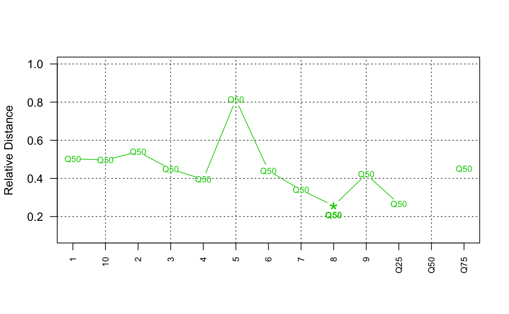
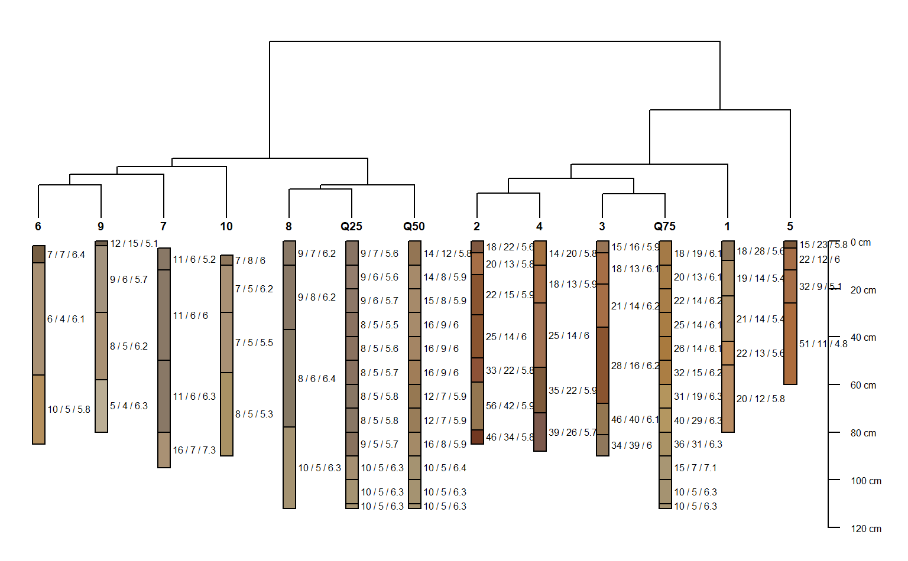

sp3.RdSoil samples from 10 soil profiles, taken from the Sierra Foothill Region of California.
data(sp3)
A data frame with 46 observations on the following 15 variables.
idsoil id
tophorizon upper boundary (cm)
bottomhorizon lower boundary (cm)
clayclay content
cecCEC by amonium acetate at pH 7
phpH in 1:1 water-soil mixture
tctotal carbon percent
hueMunsell hue (dry)
valueMunsell value (dry)
chromaMunsell chroma (dry)
midhorizon midpoint (cm)
ln_tcnatural log of total carbon percent
Lcolor: l-coordinate, CIE-LAB colorspace (dry)
Acolor: a-coordinate, CIE-LAB colorspace (dry)
Bcolor: b-coordinate, CIE-LAB colorspace (dry)
horizon name
horizon color
These data were collected to support research funded by the Kearney Foundation of Soil Science.
http://casoilresource.lawr.ucdavis.edu/
## this example investigates the concept of a "median profile" # required packages if(require(ape) & require(cluster)) { data(sp3) # generate a RGB version of soil colors # and convert to HSV for aggregation sp3$h <- NA ; sp3$s <- NA ; sp3$v <- NA sp3.rgb <- with(sp3, munsell2rgb(hue, value, chroma, return_triplets=TRUE)) sp3[, c('h','s','v')] <- t(with(sp3.rgb, rgb2hsv(r, g, b, maxColorValue=1))) # promote to SoilProfileCollection depths(sp3) <- id ~ top + bottom # aggregate across entire collection a <- slab(sp3, fm= ~ clay + cec + ph + h + s + v, slab.structure=10) # check str(a) # convert back to wide format library(reshape) a.wide.q25 <- cast(a, top + bottom ~ variable, value=c('p.q25')) a.wide.q50 <- cast(a, top + bottom ~ variable, value=c('p.q50')) a.wide.q75 <- cast(a, top + bottom ~ variable, value=c('p.q75')) # add a new id for the 25th, 50th, and 75th percentile pedons a.wide.q25$id <- 'Q25' a.wide.q50$id <- 'Q50' a.wide.q75$id <- 'Q75' # combine original data with "mean profile" vars <- c('top','bottom','id','clay','cec','ph','h','s','v') # make data.frame version of sp3 sp3.df <- as(sp3, 'data.frame') sp3.grouped <- rbind( sp3.df[, vars], a.wide.q25[, vars], a.wide.q50[, vars], a.wide.q75[, vars] ) # re-constitute the soil color from HSV triplets # convert HSV back to standard R colors sp3.grouped$soil_color <- with(sp3.grouped, hsv(h, s, v)) # give each horizon a name sp3.grouped$name <- paste(round(sp3.grouped$clay), '/' , round(sp3.grouped$cec), '/', round(sp3.grouped$ph,1)) ## perform comparison, and convert to phylo class object ## D is rescaled to [0,] d <- profile_compare(sp3.grouped, vars=c('clay','cec','ph'), max_d=100, k=0.01, replace_na=TRUE, add_soil_flag=TRUE, rescale.result=TRUE) h <- agnes(d, method='ward') p <- ladderize(as.phylo(as.hclust(h))) # look at distance plot-- just the median profile plot_distance_graph(d, 12) # similarity relative to median profile (profile #12) round(1 - (as.matrix(d)[12, ] / max(as.matrix(d)[12, ])), 2) ## make dendrogram + soil profiles # first promote to SoilProfileCollection depths(sp3.grouped) <- id ~ top + bottom # setup plot: note that D has a scale of [0,1] par(mar=c(1,1,1,1)) p.plot <- plot(p, cex=0.8, label.offset=3, direction='up', y.lim=c(2,0), x.lim=c(1.25,length(sp3.grouped)+1), show.tip.label=FALSE) # get the last plot geometry lastPP <- get("last_plot.phylo", envir = .PlotPhyloEnv) # the original labels, and new (indexed) order of pedons in dendrogram d.labels <- attr(d, 'Labels') new_order <- sapply(1:lastPP$Ntip, function(i) which(as.integer(lastPP$xx[1:lastPP$Ntip]) == i)) # plot the profiles, in the ordering defined by the dendrogram # with a couple fudge factors to make them fit plot(sp3.grouped, color="soil_color", plot.order=new_order, scaling.factor=0.01, width=0.1, cex.names=0.5, y.offset=max(lastPP$yy)+0.1, add=TRUE) }#> 'data.frame': 72 obs. of 10 variables: #> $ variable : Factor w/ 6 levels "clay","cec","ph",..: 1 1 1 1 1 1 1 1 1 1 ... #> $ all.profiles : num 1 1 1 1 1 1 1 1 1 1 ... #> $ p.q5 : num 6.6 6.4 6.4 6.39 6.39 ... #> $ p.q25 : num 8.89 8.56 8.56 7.85 7.83 ... #> $ p.q50 : num 14.1 14.4 14.7 15.7 16.2 ... #> $ p.q75 : num 17.8 19.6 21.7 24.9 25.7 ... #> $ p.q95 : num 21.6 31.3 39 50.8 50.8 ... #> $ top : int 0 10 20 30 40 50 60 70 80 90 ... #> $ bottom : int 10 20 30 40 50 60 70 80 90 100 ... #> $ contributing_fraction: num 0.89 1 1 1 1 1 0.9 0.9 0.58 0.15 ...#>#>#>